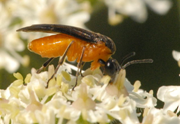
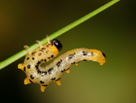

| Home |
| CRUCIFEROUS VEGETABLES |
MAJOR PESTS |
| 1. Diamond back moth |
| 2. Leaf webber |
| 3. Cabbage semilooper |
| 4. Cabbage butterfly |
| 5. Cabbage borer |
| 6. Mustard sawfly |
| 7. Cabbage aphid |
| 8. Cabbage flea beetle |
| Questions |
| Download Notes |
CRUCIFEROUS VEGETABLES :: MAJOR :: MUSTARD SAWFLY
6. Mustard Sawfly: Athalia lugens (Tenthredinidae: Hymenoptera)
Distribution and status: Widely distributed in Indonesia, Formosa, Myanmar and the Indian Sub-continent.
Host range: Mustard, toria (Brassica campestris), rapeseed, cabbage, cauliflower, knol-khol, turnip, radish, etc
Bionomics
Dark green larvae have 8 pairs of abdominal prolegs. There are five black stripes on the back, and the body has a wrinkled appearance. A full-grown larva measures 16-18 mm in length. The adults are small orange yellow insects with black markings on the body and have smoky wings with black veins. The mustard sawfly breeds from October to March and undergoes pupal diapause during summer. The adults emerge from these cocoons early in October. They live for 2-8 days and lay 30-35 eggs singly, in slits made with saw like ovipositors along the underside of the leaf margins. Egg period is 4-8 days and the larvae feed exposed in groups of 3-6 on the leaves during morning and evening. They remain hidden during the day time and, when disturbed, fall to the ground and feign death. There are 7 instars with a larval period of 16-35 days. Pupation is in water proof oval cocoons in soil and the pupal period is 11-31 clays. Lifecycle is completed in 31-34 days. It completes 2-3 generations from October to March.
|  |  |
Damage symptoms
The grubs alone are destructive. They bite holes into leaves preferring the young growth and skeletonize the leaves completely. Sometimes, even the epidermis of the shoot is eaten up. Although the seedlings succumb; the older plants, when attacked, do not bear seed.
Management
- Give first irrigation 3-4 weeks after sowing as it reduces the bug population significantly. (ii) Spray 1.0 L of malathion 50 EC or 625 ml of endosulfan 35 EC or quinalphos 25 EC in 500-600 L of water per ha once in October and again in March-April.
- Conserve larval parasitoid Perilissus cingulator Morby (Ichneumonidae) and the bacterium, Serratia marcescens Bizio (Enterobacteriaceae)